מה תעשו?
- תרשמו את המספרים ש-Teachable Machine נתן לכם.
- תבקשו מאקסל לחשב עד כמה הבינה המלאכותית שאימנתם טובה.
- תציירו 5 תרשימים: עוגה, עמודות, קווי, פיזור (XY) ובועות (XYZ).
- תסבירו מה התרשימים מספרים על הבינה המלאכותית.
לפני שמתחילים
- הורידו את קובץ ההתחלה בשפה שלכם ופתחו אותו באקסל. אם מופיעה הודעת «תצוגה מוגנת», לחצו אפשר עריכה.
- המספרים: השתמשו בתוצאות שלכם, או במספרי הדוגמה שבחלק 0.
- האקסל שלכם יכול להיות בעברית, בערבית או באנגלית. שמות התפריטים שונים, אבל הכפתורים והסמלים דומים — ובסוף המדריך יש רשימת מילים בשלוש שפות.
- שמות הפונקציות בנוסחאות נכתבים תמיד באנגלית (SUM, IF ועוד). אם מופיעה שגיאה בגלל הפסיק
,נסו נקודה-פסיק;במקומו.
0משיגים את המספרים
ב-Teachable Machine בדקו תמונה אחת בכל פעם, ורשמו את שלושת האחוזים שמופיעים (תפוח, בננה, תפוז). צריך 12 תמונות משלב 3: מ-apple_01 עד apple_04, מ-banana_01 עד banana_04 ומ-orange_01 עד orange_04.
אין לכם יותר את המודל, או שאין זמן? השתמשו במספרי הדוגמה האלה:
| תמונה | תפוח | בננה | תפוז |
|---|---|---|---|
| apple_01 | 97 | 2 | 1 |
| apple_02 | 91 | 4 | 5 |
| apple_03 | 99 | 0 | 1 |
| apple_04 | 84 | 3 | 13 |
| banana_01 | 3 | 94 | 3 |
| banana_02 | 6 | 88 | 6 |
| banana_03 | 12 | 41 | 47 |
| banana_04 | 4 | 95 | 1 |
| orange_01 | 5 | 2 | 93 |
| orange_02 | 38 | 9 | 53 |
| orange_03 | 61 | 5 | 34 |
| orange_04 | 7 | 3 | 90 |
1מכירים את חלון אקסל
הסתכלו על התמונה והתאימו את המספרים לרשימה שמתחתיה. לכל תא יש כתובת שמורכבת מאות העמודה ומספר השורה, למשל C2.
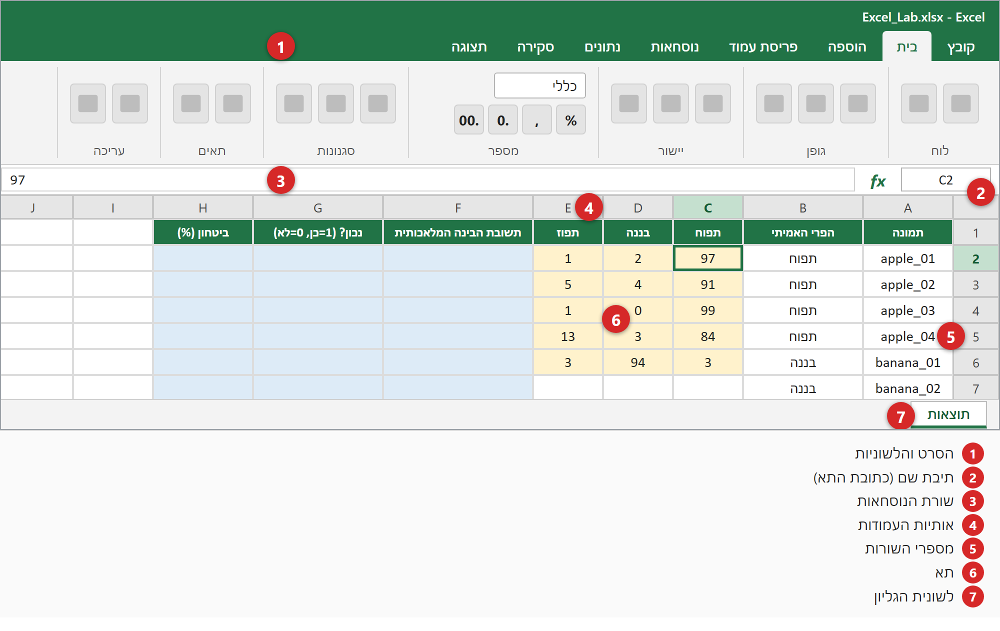
2מקלידים את המספרים
- פתחו את קובץ ההתחלה. התאים הצהובים הם התאים שבהם מקלידים מספרים.
- לחצו על התא C2 והקלידו את אחוז התפוח של התמונה apple_01, לחצו Tab והקלידו את אחוז הבננה, שוב Tab והקלידו את אחוז התפוז, ואז לחצו Enter.
- המשיכו עד שתסיימו את כל 12 השורות (36 מספרים).
- מקלידים רק את המספר — בלי סימן %.
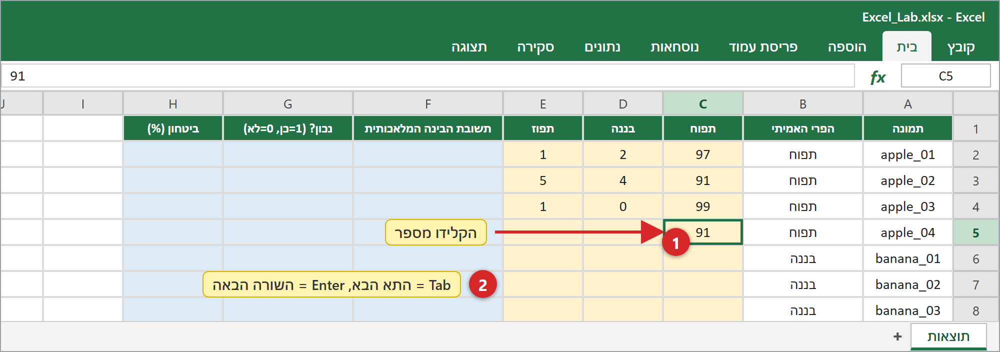
3נותנים לאקסל למצוא את תשובת הבינה המלאכותית
התאים הכחולים הם התאים שבהם מקלידים נוסחאות. כל נוסחה מתחילה בסימן =.
לחצו על נוסחה כדי להעתיק אותה
- לחצו על התא F2.
- הקלידו את הנוסחה הבאה (לחצו עליה כדי להעתיק):
=INDEX($C$1:$E$1,MATCH(MAX(C2:E2),C2:E2,0)) - לחצו Enter. אקסל יציג את הפרי עם האחוז הגבוה ביותר.
- בתא G2 הקלידו
=IF(B2=F2,1,0)— מחזיר 1 אם הבינה המלאכותית צדקה ו-0 אם טעתה. - בתא H2 הקלידו
=MAX(C2:E2)— זה הביטחון של הבינה המלאכותית. - סמנו את F2:H2 וגררו את הריבוע הקטן שבפינה (ידית המילוי) למטה עד שורה 13. אקסל מעתיק את הנוסחאות ומשנה את מספרי השורות לבד.
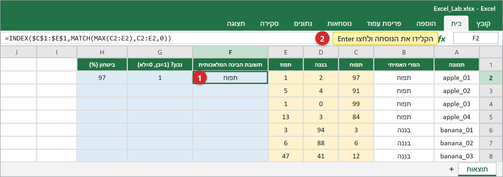
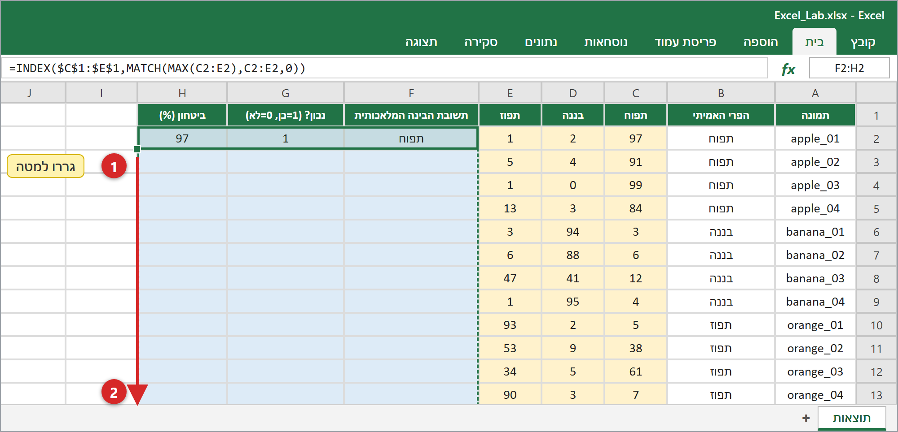
4סופרים, מחשבים ממוצע ואחוזים
הקלידו את הנוסחאות האלה בתאים הכחולים בעמודה K:
| תא | נוסחה | מה זה מספר לכם |
|---|---|---|
| K2 | =COUNT(G2:G13) | כמה תמונות |
| K3 | =SUM(G2:G13) | כמה תשובות היו נכונות |
| K4 | =K2-K3 | כמה תשובות היו שגויות |
| K5 | =K3/K2 | דיוק = נכונות ÷ הכול |
| K6 | =AVERAGE(H2:H13) | ביטחון ממוצע |
| K7 | =MIN(H2:H13) | הביטחון הנמוך ביותר |
| K10 | =AVERAGEIF($B$2:$B$13,J10,$G$2:$G$13) | הדיוק של תפוח — ואז מעתיקים למטה עד K12 |
| K15 | =K5 | הדיוק בשלב 3 — ובתאים K16:K18 מקלידים את הדיוק שלכם בשלבים האחרים (למשל 60%) |
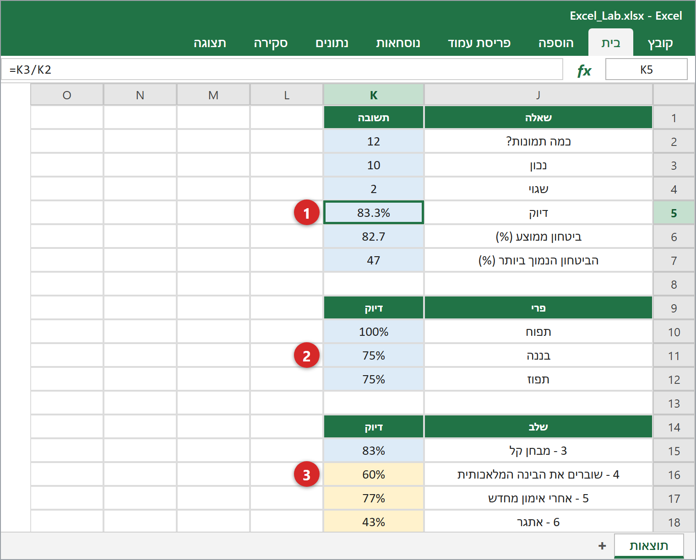
הדיוק ב-K5 מופיע כמספר 0.8333. לחצו על התא K5, ואז על הלשונית בית ועל הכפתור % (סגנון אחוזים). עשו את אותו הדבר ל-K10:K12 ול-K15:K18.
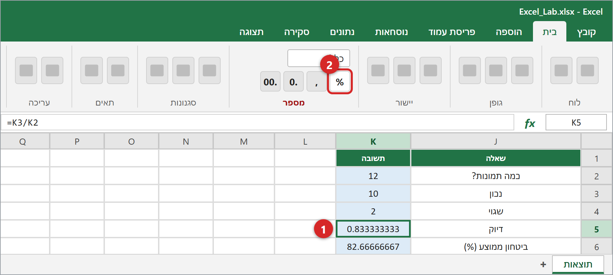
5מציירים תרשימים
השיטה תמיד זהה: ① סמנו את התאים בגרירה עם העכבר. ② פתחו את הלשונית הוספה ולחצו על סמל תרשים בקבוצה תרשימים. ③ אקסל מצייר את התרשים — הזיזו אותו ושנו את גודלו בעזרת העכבר.
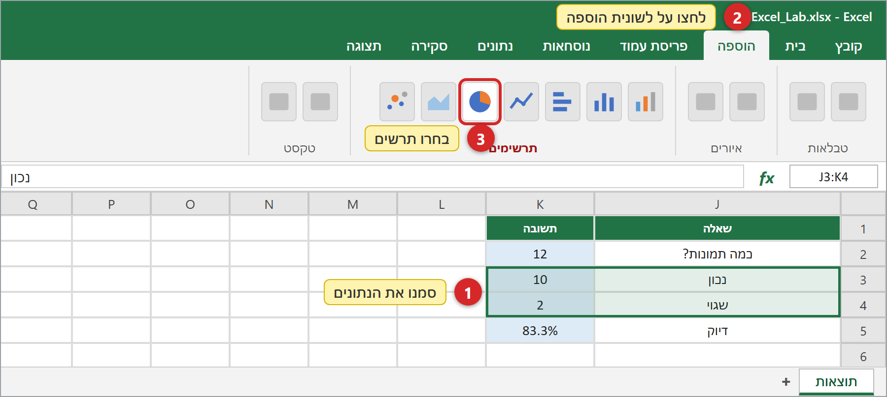
5.1 — תרשים עוגה — נכון מול שגוי
- סמנו J3:K4
- הוספה ← תרשים עוגה ← עוגה דו-ממדית
מראה איזה חלק מתשובות הבינה המלאכותית היה נכון.
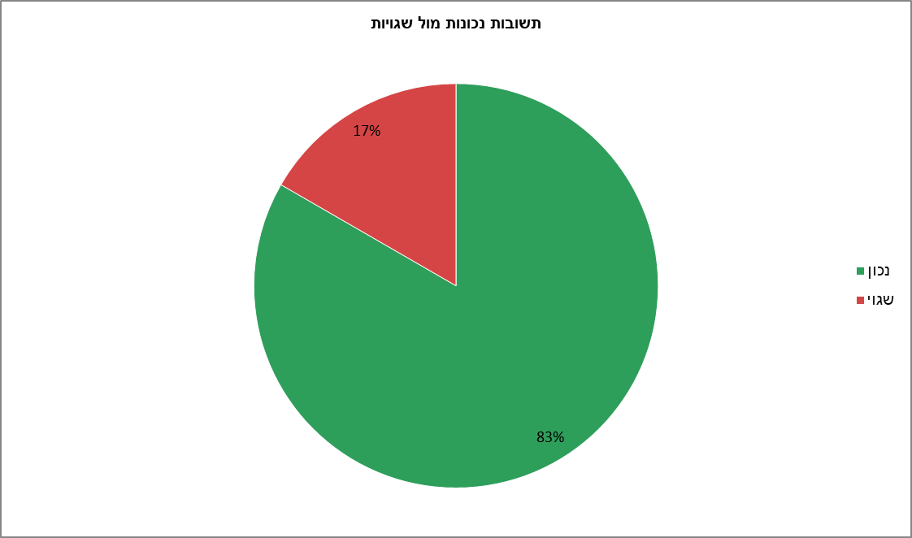
5.2 — תרשים עמודות — דיוק לכל פרי
- סמנו J9:K12 (כולל שורת הכותרת)
- הוספה ← תרשים עמודות ← הסוג הראשון (עמודות מקובצות)
מראה איזה פרי הבינה המלאכותית מכירה הכי טוב.
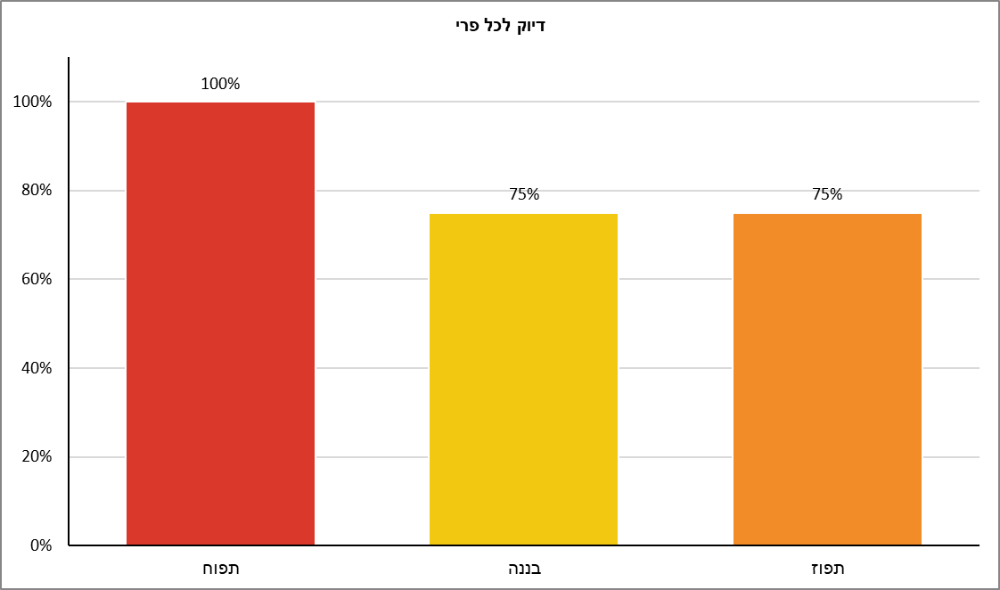
5.3 — תרשים קווי — דיוק לאורך השלבים
- סמנו J14:K18
- הוספה ← תרשים קווי ← הסוג עם הנקודות על הקו
מראה אם הבינה המלאכותית השתפרה אחרי אימון מחדש.
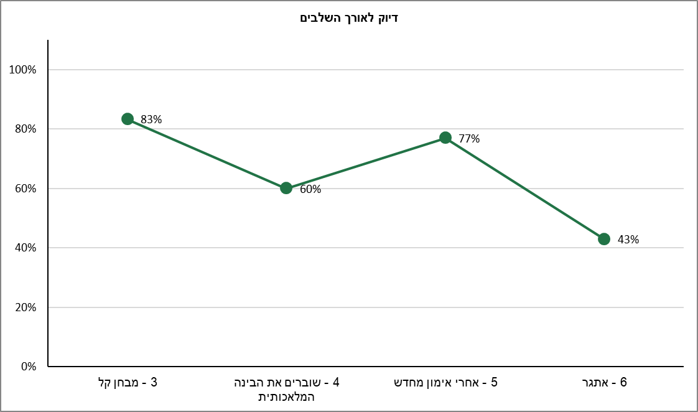
5.4 — תרשים פיזור (XY) — תפוח מול בננה
- סמנו C1:D13
- הוספה ← תרשים פיזור (X, Y) או בועות ← הסוג הראשון (נקודות בלבד)
ציר X = אחוז התפוח, ציר Y = אחוז הבננה. כל נקודה היא תמונה אחת. כמו בתמונה, התפוחים נמצאים למטה בצד ימין והבננות למעלה בצד שמאל, והתפוזים נשארים ליד הפינה (0,0) כי שני האחוזים נמוכים. חפשו את שתי הנקודות שהתרחקו מהקבוצה שלהן — אלה הטעויות. נקודות באמצע הן תמונות שהבינה המלאכותית לא בטוחה לגביהן.
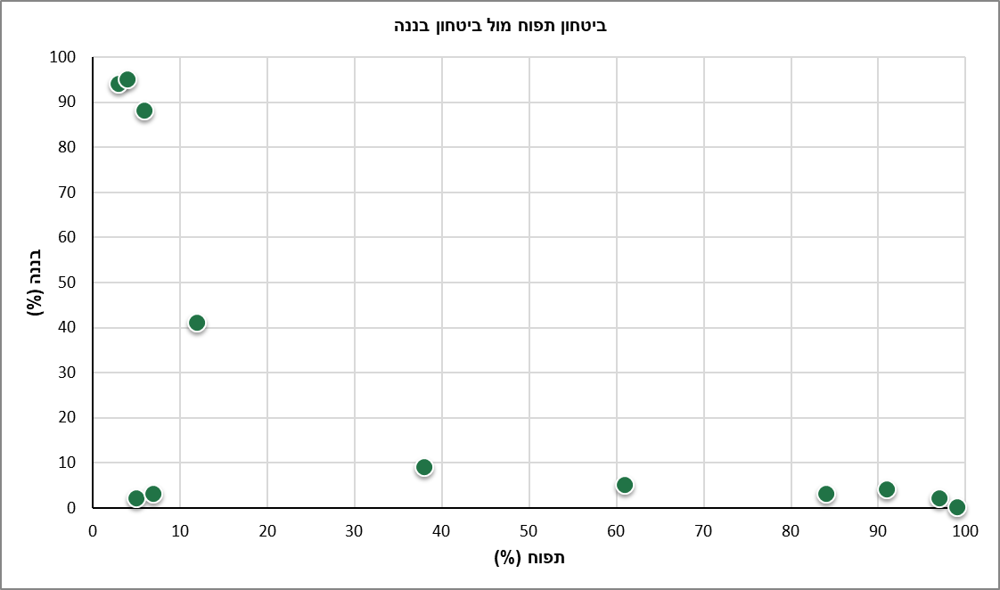
5.5 — תרשים בועות (XYZ) — שלושה מספרים בתרשים אחדלמומחים
- סמנו C2:E13 — הפעם בלי שורת הכותרת (תרשים בועות צריך מספרים בלבד)
- הוספה ← תרשים פיזור (X, Y) או בועות ← בועות
X = אחוז התפוח, Y = אחוז הבננה, וגודל הבועה Z = אחוז התפוז. בועות גדולות ליד הפינה השמאלית התחתונה הן תמונות «תפוזיות» מאוד.
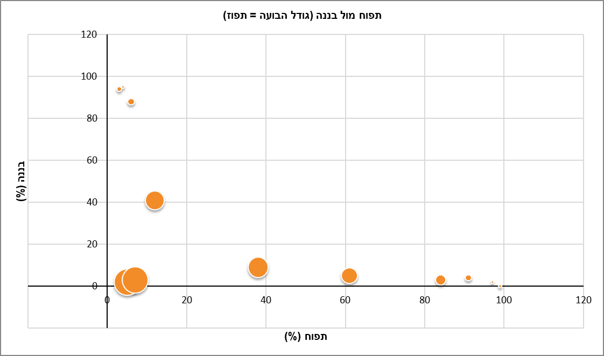
6הופכים את התרשימים לברורים
- לחצו על התרשים כדי שהמסגרת שלו תופיע.
- לחצו על הכפתור + (רכיבי תרשים) שבצדו וסמנו: כותרת תרשים, כותרות צירים, תוויות נתונים.
- לחצו על טקסט הכותרת והקלידו כותרת משלכם.
- כדי לצבוע עמודה: לחצו עליה פעמיים (כך נבחרת עמודה אחת בלבד), לחצו לחצן ימני ← מילוי ← בחרו צבע: אדום לתפוח, צהוב לבננה, כתום לתפוז.
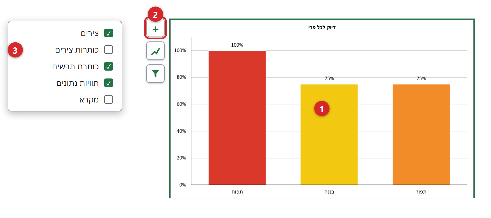
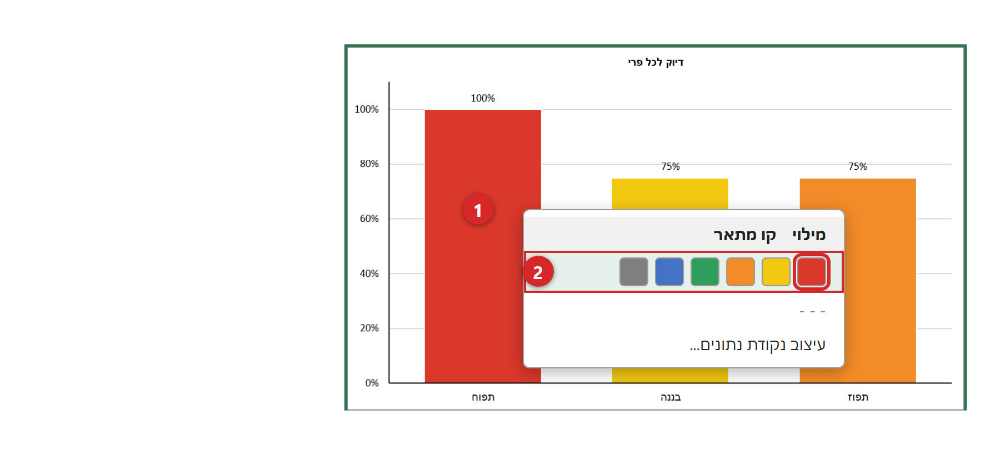
7לוח התוצאות שלכם
סדרו את חמשת התרשימים זה לצד זה בגליון (או העתיקו אותם לגליון חדש). לחצו Ctrl+S כדי לשמור את הקובץ כ-xlsx. כדי להכניס תרשים ל-Word או ל-PowerPoint: לחצו על התרשים ואז Ctrl+C, ובקובץ השני Ctrl+V.
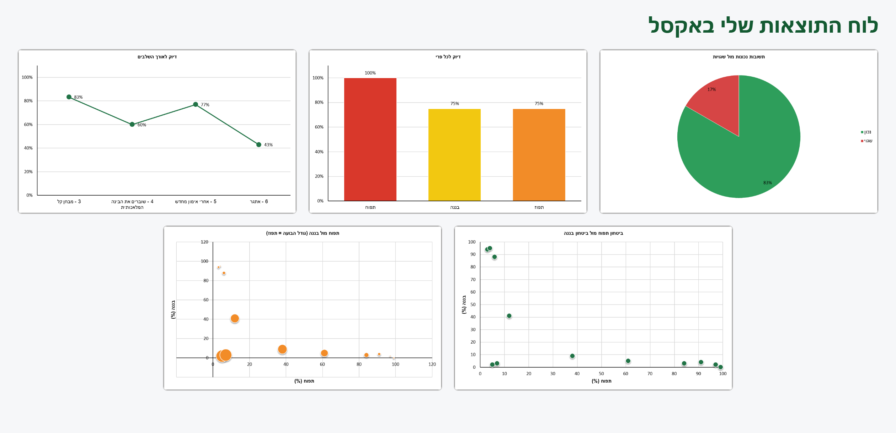
8חושבים כמו מדעני נתונים
- מה הדיוק של הבינה המלאכותית שלכם? איזה פרי היא מכירה הכי טוב ואיזה הכי פחות?
- הסתכלו על התמונות עם הביטחון הנמוך ביותר: האם התשובות עליהן היו נכונות או שגויות? מה זה מרמז?
- בתרשים הפיזור: איפה נמצאים התפוחים, הבננות והתפוזים? איפה תימצא תמונה שמבלבלת את הבינה המלאכותית?
- בתרשים הקווי: מה השתנה אחרי האימון מחדש? ולמה, לדעתכם?
- בתרשים הבועות: מה אומרות הבועות הגדולות?
- אילו יכולתם להציג למנהל תרשים אחד בלבד, איזה הייתם בוחרים ולמה?
רשמו את התשובות בקובץ EXCEL_RESULTS.
⭐ אתגרים למי שמסיים מוקדם
- צרו תרשים עמודות שמשווה את אחוזי התפוח, הבננה והתפוז ב-6 התמונות הראשונות (סמנו A1:A7, ואז תוך החזקת Ctrl סמנו את C1:E7).
- מיינו את הטבלה לפי ביטחון: הלשונית נתונים ← מיון. מצאו את 3 התמונות עם הביטחון הנמוך ביותר.
- צבעו באדום כל ביטחון שנמוך מ-60: בית ← עיצוב מותנה ← כללי הדגשת תאים ← קטן מ…
מילים בשלוש שפות
| English | العربية | עברית |
|---|---|---|
| Cell | خلية | תא |
| Row | صف | שורה |
| Column | عمود | עמודה |
| Formula | صيغة | נוסחה |
| Formula bar | شريط الصيغة | שורת הנוסחאות |
| Sheet | ورقة عمل | גליון עבודה |
| Home (tab) | الصفحة الرئيسية | בית |
| Insert (tab) | إدراج | הוספה |
| Chart | مخطط | תרשים |
| Pie chart | مخطط دائري | תרשים עוגה |
| Column chart | مخطط عمودي | תרשים עמודות |
| Line chart | مخطط خطي | תרשים קווי |
| Scatter chart (XY) | مخطط مبعثر (XY) | תרשים פיזור (XY) |
| Bubble chart | مخطط فقاعي | תרשים בועות |
| Chart title | عنوان المخطط | כותרת תרשים |
| Axis titles | عناوين المحاور | כותרות צירים |
| Data labels | تسميات البيانات | תוויות נתונים |
| Legend | وسيلة الإيضاح | מקרא |
| Fill handle | مقبض التعبئة | ידית מילוי |
| Percent Style | نمط النسبة المئوية | סגנון אחוזים |
| Accuracy | الدقة | דיוק |
| Confidence | الثقة | ביטחון |
| Undo | تراجع | ביטול פעולה |
| Save | حفظ | שמירה |
משהו השתבש?
מופיע ##### בתא
העמודה צרה מדי. לחצו לחיצה כפולה על הקו שבין שתי אותיות עמודות.
הנוסחה מוצגת כטקסט ולא מחושבת
ודאו שהיא מתחילה ב-= ושעיצוב התא הוא «כללי» ולא «טקסט».
מופיע #NAME?
שם פונקציה נכתב לא נכון. בדקו את האיות (באנגלית).
מופיעה שגיאה בגלל הפסיק
במחשבים מסוימים משתמשים בנקודה-פסיק ; במקום פסיק ,
התרשים ריק או נראה מוזר
סמנו קודם את התאים הנכונים ואז הוסיפו תרשים. תמיד אפשר לבטל עם Ctrl+Z.
המספר מופיע 0.83 במקום 83%
סמנו את התא ולחצו על הכפתור % בלשונית בית.